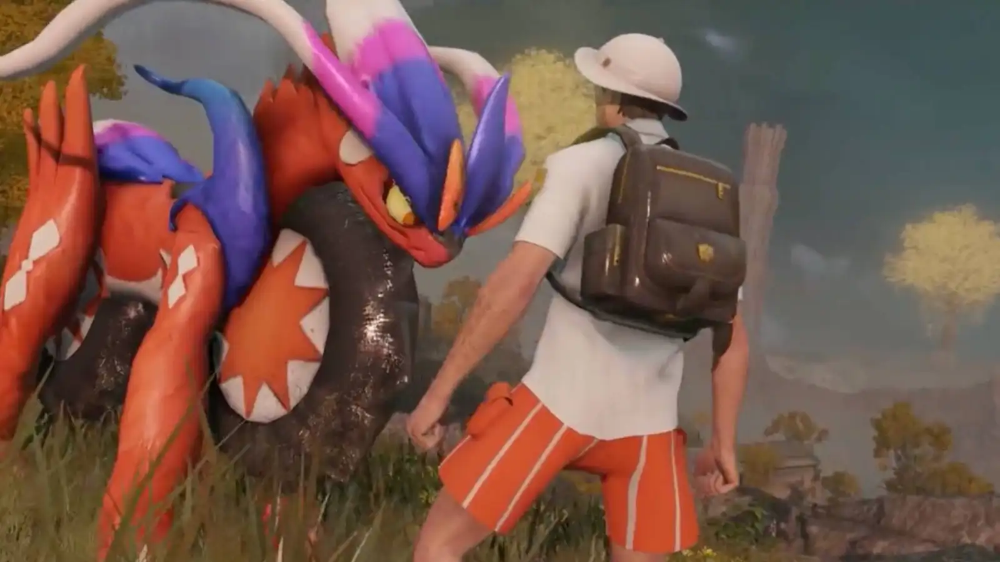
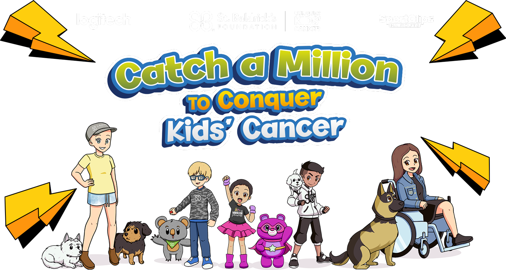

Home | Featured
Shiny Hunting Is About To Get Harder In Pokemon Scarlet And Violet
Game Freak is rolling out another big update to Pokemon Scarlet and Violet at the end of the month, and while there’s some attention being given to the games’ notorious performance issues, the solution the studio has gone with will fundamentally change certain aspects of the open-world RPG. Specifically, the team is looking to lower the amount of Pokemon it puts on screen at a time, which means that fewer will spawn at a time. This has big implications for shiny hunting.

Pokemon Fans Think This Elden Ring Mod Looks Better Than Scarlet And Violet
Massive Pokemon Discord Owner Banned For Allegedly Sexually Preying On Minors

Pokemon Scarlet and Violet Leak Reveals Unused Content

St. Baldrick’s Foundation's Catch a Million marathon returns for 2023
Latest News
St. Baldrick’s Foundation's Catch a Million marathon returns for 2023
Pokemon Scarlet and Violet Leak Reveals Unused Content
Use code「1STCHAMPSV」to receive Jiseok Lee's Garganacl in Pokemon Scarlet & Violet until February 20th
Community Choice
Artwork of the Day

Celebrate Valentine's with this beautifully drawn Rika from talented artist QM96554101